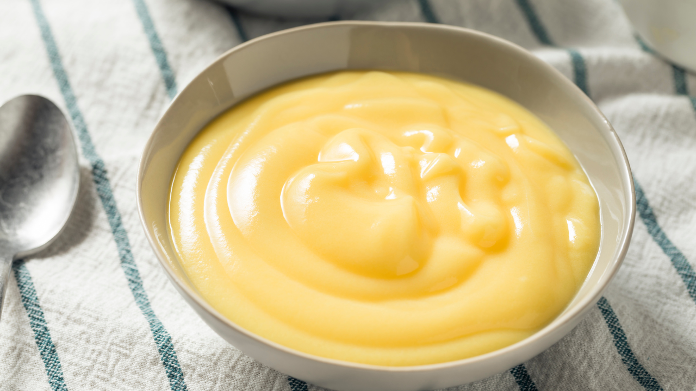

Classic Vanilla Pudding
Prep time:
10 mins (+ 2 hours chilling)
Yield:
4
Ingredients
2 cups milk
1/2 cup sugar
3 tablespoons cornstarch
1/4 teaspoon salt
1 teaspoon vanilla extract
Steps
In a saucepan, whisk together milk, sugar, cornstarch, and salt. Cook over medium heat, stirring constantly, until thickened.
Remove from heat and stir in vanilla extract.
Pour into serving bowls, cover with plastic wrap, and chill for at least 2 hours before serving.